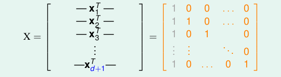
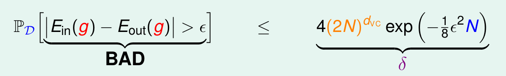
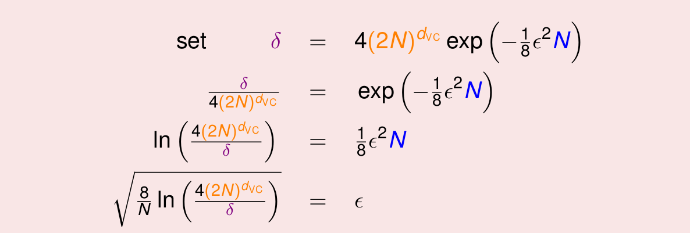
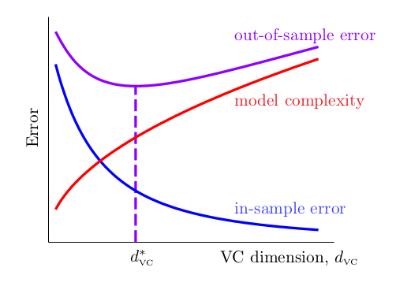

《机器学习基石》系列课程（七）
我们已经讨论过了，拥有Break Point k的增长函数mh(N)的上界最大是N的k-1次幂，在第6节的最后，我们提出来VC Bound， 利用该公式，我们可以有这样的推论，如果我们当前的Learning问题满足：
- 成长函数有Break Point k。
- 数据量N足够大
- 能够从假设空间中选择一个g，满足Ein非常小（接近0）。
那么我们就能够说明我们的Learning任务是可行的。当然，这个可行还带有运气的成分（还是会有一定的机率遇到BAD情况，只不过概率很低）。
Definition of VC Dimension
现在，我们为最大的非Break Point取一个正式的名字：VC Dimension，将其记为dvc。此时，如果N小于dvc，那么对于有N个输入的假设空间，一定能够shatter这些数据。任意k大于dvc，k都是H的Break Point。那么此时，我们就可以对成长函数的上界有一个新的表示：
1 | mh(N) <= N * dvc; (N >= 2 && dvc >= 2) |
dvc取其它数值的，可以有其它的表示方式。
那么此时，对于之前常常提到的几种情况，其dvc的值分别如下：
- positive rays： dvc = 1。
- positive intervals：dvc = 2。
- convex sets：dvc = infinite。
- 2D Perceptrons：dvc = 3。
对于一个好的假设空间来说，它有有限的VC Dimension。此时，如果我们知道我们的Learning任务有一个有限的dvc，那么不管我们的学习算法是什么，不管我们的输入数据的分布是什么，不管我们要学习的目标函数是什么，我们都能保证我们的学习能够进行，因为我们dvc is finite保证了g能够使Ein和Eout大致相等。
VC Dimension of Perceptrons
我们再回顾一下在二维Perceptron任务上到底发生了什么，我们只有输入线性的输入数据，PLA才能够停止，而我们跑了很多次以后，得到的最终结果是一条线，能够将所有的点正确的分为两类，实际上就是让Ein=0。而另一方面，我们在某一个符合某一个分布，并利用target function生成的数据上进行Learning时，由于2D数据，其dvc=3，也就保证了在N足够大的时候，Ein和Eout是能够大致相等的。以上这两点保证了PLA的可行性。
当然，这只是在2维空间里，那么在更高维度的空间呢？
我们尝试推论d维空间里dvc的大小是多少：1维空间dcv=2，2维空间中dvc=3，那么d为空间呢，是否是d+1呢？
我们要证明这件事，实际上只要分两步就可以：
- 证明dvc >= d+1。
- 证明dvc <= d+1。
我们首先证明1:
如果dvc大于d+1，那么对于d+1个点，必然都能够shatter。我们可以取d+1个点：

如果对于任何一个y = [y1， y2，…，yd+1]T，都能找到一个w，令sign(xw) = y即可。因为x是可逆矩阵，因此很简单，直接两边乘以X的逆矩阵就可以。从而我们知道d+1个点都能够被shatter，从而得证。
我们再证明2:
证明2用到了线性代数中一个向量的线性表示的知识。我们取d+2个点，看第d+2个点能否被其它的点线性表示。由此证明出2。
Physical Intuition of VC Dimension
那么VC Dimension的物理意义是什么呢？VC Dimension表示了假设空间的自由度，或者形象地说，就是假设空间有多少个有效的旋钮（参数）我们能够调节（当然，只是一个不准确的描述，可能并不如此）。比如，对于Positive Rays模型，我们的dvc=1，我们只能调节分界点在哪，对于Positive Intervals问题，我们则有两个参数，可以调节左边在哪，右边在哪。
现在，我们就可以用dvc的大小来回答是否能够让Ein和Eout近似相等和我们能够让Ein足够小这两个问题了：
- 如果dvc很小，Ein和Eout一定能够近似相等，但是由于Learning的自由度太小，我们却不一定能够学习到能够让Ein足够小的假设。
- 同理，如果dvc很大，Ein和Eout则可能相差很远，但是由于Learning的自由度很大，所以能够找到Ein足够小的假设。
由此，我们说使用适当的dvc（适当的模型）是十分重要的。
Interpreting VC Dimension
现在，我们想更深入了解VC Dimension的意义。我们首先对VC Bound重新描述。

VC Bound实际上说明了坏事请发生的概率很小，我们使用δ表示坏事情发生的概率，那么1 - δ就是好事情发生的概率。那么好事情发生的概率就会很大很大。我们对其做一个简单的代换：

我们最终得到了e，其表示Ein和Eout的差值的绝对值大小，由此，我们能够推出Ein和Eout差值的上界，更准确地说，我们有很大的机会将Ein和Eout的差值限制在这个范围内。我们一般更加重视上界的作用。这个公式表明，我们的模型有多么强，那么在generate这个模型的时候，就要付出多大的代价（Penalty for Model Complexity）。通常表示为：Ω(N,H,δ)。
我们可以画出这样一张图：

横轴是dvc，纵轴是Error。随着VC维度的升高，模型的Ein越来越小，Eout先小后大，而模型的复杂度则越来越大。而最好的模型则在中间。我们未来会利用这张图来想办法设计更好的机器学习演算法。
所以，不是更复杂的、能力更强的模型性能更好，我们不要追求复杂的Model，我们需要正确使用Ml！
VC Dimension还有另外一层意思：就是资料的复杂度。资料越大，往往error能够限定到更小的范围。在理论上符合要求的数据量需要达到100000*dvc，但是实际上只要10倍的dvc的数据就能达到良好的效果。条件如此宽松的原因如下：
- 我们使用Hoeffding不等式来估计Eout，我们可以在任意分布的数据以及任意目标函数上使用这个不等式，Hoeffding不等式的包容性很高，导致最终结果的包容性高。
- 我们使用成长函数来替换M，而并没有用真正的假设空间的大小，这允许我们使用任何资料。
- 我们使用了多项式做上限的上限的上限，而并不是成长函数。
- 我们仍然使用了union bound，即使我们将重叠的部分计算的很好，仍然还存在糟糕的情况。
VC Bound很宽松，但是做的已经很好了。
Conclusion
在这一章中我们介绍了VC Dimension，也就是最大的非Break Point。在Perceptrons上其数值是d+1。物理意义上，dvc告诉我们model有多大的自由度，我们可以使用它来看模型的复杂度以及需要使用多少数据来学习。
文章内容和图片均来自“国立台湾大学林轩田老师”的《机器学习基石》课程！
— END —